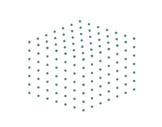
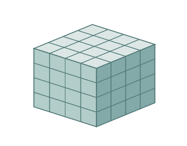

2.2 Meshes: surfaces and useful detail
A mesh describes surface shape using connected patches. For a drawer, these can describe the outside, the inner walls, and the bottom. The empty space inside the drawer stays empty: a surface mesh does not mean the whole object is filled with material.
A point cloud records sampled positions in 3D. A mesh also records how positions connect to form surfaces. The positions are called vertices, their connections are edges, and the surface patches are faces. Moving the positions changes the shape; changing their connections changes how the surface is assembled.

Point cloud
Useful for recording measurements. Gaps may mean an area was never observed, rather than a real hole.

Triangle mesh
Explicit surface patches. Triangles are always planar, which makes them convenient for rendering and geometric calculations.

Quad mesh
Four-sided patches can form regular rows useful for editing and subdivision. They can be triangulated for rendering.
Building a mesh from measured points is called surface reconstruction. It must infer which samples belong together; blindly filling every gap could seal the opening around a drawer. Open3D’s examples show several ways to estimate these surfaces.
What is Blender used for?
Blender is free software for making and editing 3D content. We could open a generated cabinet in Blender, rotate it to inspect the back, build a missing handle, add a wood texture, position lights and a camera, and render an image. It is a working environment for these tasks; a mesh is one kind of data we can edit inside it.
The material guide explains how to control the appearance of those surfaces.